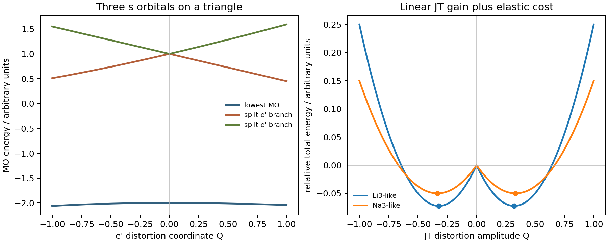

Model Calculation
Jahn-Teller Instability in Li3 and Na3
The Jahn-Teller effect is not a vague tendency toward lower symmetry. It is a precise vibronic instability: a non-linear molecule or local coordination unit with a degenerate electronic state can lower its total energy by distorting along symmetry-allowed nuclear coordinates. The triangular \(\mathrm{Li_3}\) and \(\mathrm{Na_3}\) clusters are clean examples because three equivalent atomic \(s\) orbitals already contain the essential algebra.
Degeneracy and Occupation
Suppose two orbitals are degenerate at a high-symmetry geometry. A distortion coordinate \(Q\) may split them as
If the degenerate shell is not occupied symmetrically, the electrons can choose the lower branch. For one electron in the pair,
The elastic cost of the distortion is quadratic to leading order,
The total energy is therefore
Near \(Q=0\), the electronic stabilization is linear while the nuclear penalty is quadratic. The high-symmetry point is unstable, and the minimum occurs at
This is the mathematical meaning of an "asymmetric occupation" of degenerate orbitals. In density-matrix language, the occupation matrix inside the degenerate subspace is not proportional to the identity:
If instead every member of the degenerate shell is occupied equally, \(\rho=cI\), the first-order Jahn-Teller driving force cancels.
How Three \(s\) Orbitals Become \(a_1'+e'\)
In an equilateral \(\mathrm{M_3}\) triangle, with \(\mathrm{M}=\mathrm{Li}\) or \(\mathrm{Na}\), the point group is \(D_{3h}\). Each atom contributes one valence \(s\) orbital. Call the three localized orbitals \(\chi_1,\chi_2,\chi_3\). A molecular orbital is a linear combination
There are three basis orbitals, so there must be three independent molecular orbitals. They cannot all be the same orbital, because independent quantum states must be linearly independent and can be chosen orthogonal.
The fully symmetric combination is
It is unchanged by the symmetry operations of \(D_{3h}\), so it belongs to the one-dimensional representation \(a_1'\). The two remaining combinations must be orthogonal to it, so their coefficients satisfy \(c_1+c_2+c_3=0\). One convenient choice is
These two functions transform into each other under rotations and reflections, so they form a two-dimensional \(e'\) representation. The symmetry decomposition is therefore
The same result appears from the three-site Huckel Hamiltonian
whose eigenvalues are
For the usual bonding sign \(\beta<0\), \(a_1'\) is the lower bonding orbital and \(e'\) is a degenerate pair.
Li3 and Na3
Neutral \(\mathrm{Li_3}\) and \(\mathrm{Na_3}\) each have three valence electrons:
At the equilateral geometry the occupation is
The \(e'\) shell is open and degenerate, with only one electron in a two-dimensional orbital space. That is a first-order Jahn-Teller situation. An \(e'\)-type vibrational distortion lowers one branch of the \(e'\) pair and raises the other, so the single electron occupies the lower branch.
Geometrically this changes the equilateral triangle into an isosceles triangle:
The two clusters therefore share the same symmetry argument. Their quantitative difference is in the vibronic coupling \(g\), the effective stiffness \(K\), anharmonic terms, and nuclear masses. Static electronic energy does not depend directly on mass, but dynamic Jahn-Teller motion and nuclear quantum effects do: lighter \(\mathrm{Li}\) nuclei make zero-point motion and tunneling more plausible when the barrier between equivalent distorted structures is shallow.
Why Symmetry Is Not Broken Completely
Jahn-Teller distortion is economical. It does not lower symmetry for its own sake; it lowers symmetry only enough to remove the electronic degeneracy. In the octahedral \(e_g\) example, a tetragonal distortion gives
The \(d_{z^2}\) and \(d_{x^2-y^2}\) orbitals are no longer symmetry-forced to be degenerate, but many symmetry elements remain. In group-theoretical language the distorted structure often chooses a high-symmetry subgroup that is just sufficient to split the electronic representation. This is the epikernel principle.
The same idea appears in the triangular clusters. The distortion need not make all three bond lengths different. A \(C_{2v}\) isosceles triangle is already enough to split \(e'\), so going all the way to a scalene \(C_s\) or \(C_1\) geometry would require extra nuclear distortion without a guaranteed first-order electronic reward.
Static, Dynamic, and Nuclear-Quantum Limits
The same symmetry-allowed Jahn-Teller force can lead to different physical regimes. If the stabilization is large compared with thermal and zero-point fluctuations, the system is static: it is frozen in one distorted geometry and experiments resolve inequivalent bond lengths. If the force is weak, or if the equivalent minima are separated by a low barrier, the system can be dynamic: the instantaneous structure is distorted but the time-averaged structure may look nearly high-symmetry.
A useful schematic diagnostic is
When the nuclear zero-point energy or tunneling splitting is comparable to the barrier between equivalent Jahn-Teller minima, a vibronic ground state can delocalize over several distorted structures. Then one may have
This means that local distortions exist, but the averaged structure recovers more symmetry. In crystallography such dynamics can appear as large anisotropic thermal displacement parameters rather than as a clean static bond-length splitting.
Conical Intersection View
The \(E\otimes e\) Jahn-Teller problem is also a conical-intersection problem. With two degenerate electronic states and two active nuclear coordinates \(Q_\theta,Q_\epsilon\), the linear vibronic Hamiltonian can be written as
The adiabatic surfaces are
They intersect at \(Q_\theta=Q_\epsilon=0\), the high-symmetry geometry. Moving away from the origin opens the energy gap linearly. This is a true two-dimensional conical intersection, not merely a one-dimensional avoided crossing. A one-dimensional same-symmetry avoided crossing can be described by
If \(\Delta\ne0\), the minimum gap is finite. In a genuine conical intersection the gap can vanish because two independent nuclear coordinates can satisfy the two degeneracy conditions at once. In higher-dimensional nuclear space the conical intersection becomes a seam of dimension \(N-2\), with a two-dimensional branching plane attached to each seam point.
The topology is also different. For the simple two-dimensional model, a loop around the origin changes the sign of the electronic eigenvector and gives a Berry phase of \(\pi\). This phase is absent in an ordinary one-dimensional avoided crossing and can alter vibronic levels, tunneling, and dynamic Jahn-Teller spectra.
Minimal Numerical Check
The script linked below performs a compact model check. The left panel diagonalizes a three-site triangular Hamiltonian along one \(e'\) distortion path and shows the \(e'\) degeneracy splitting. The right panel overlays two illustrative effective Jahn-Teller curves of the form
The "Li3-like" and "Na3-like" labels are pedagogical parameter sets, not experimental constants. They are included only to show that the same symmetry mechanism can have different distortion amplitudes and stabilization energies once \(g\) and \(K\) change.

| Model label | \(g\) | \(K\) | \(Q_0=g/K\) | \(E_{\mathrm{JT}}=g^2/(2K)\) |
|---|---|---|---|---|
| Li3-like | 0.45 | 1.40 | 0.321 | 0.072 |
| Na3-like | 0.30 | 0.90 | 0.333 | 0.050 |
Takeaways
- Degenerate orbitals are not enough by themselves; the occupation of the degenerate shell must be non-symmetric for a first-order Jahn-Teller instability.
- Three equivalent \(s\) orbitals in an equilateral \(\mathrm{Li_3}\) or \(\mathrm{Na_3}\) triangle form \(a_1'+e'\), and the three valence electrons occupy \((a_1')^2(e')^1\).
- The expected distortion is \(D_{3h}\rightarrow C_{2v}\): an equilateral triangle becomes an isosceles triangle.
- Jahn-Teller symmetry breaking is usually economical: it removes the degeneracy while preserving as much symmetry as possible.
- The \(E\otimes e\) Jahn-Teller model is a symmetry-enforced conical intersection. Dynamic Jahn-Teller behavior adds nuclear motion, tunneling, and Berry-phase physics around that intersection.
Code and Data
- li3_na3_jt_model.py diagonalizes the triangular three-site model, evaluates the effective JT curves, and writes the figure and CSV table.
- li3-na3-jt-model.csv stores the sampled distortion coordinate, three molecular-orbital energies, and two toy total-energy curves.
References
- Jahn and Teller, Proc. R. Soc. Lond. A 161, 220 (1937).
- Bersuker, The Jahn-Teller Effect, Cambridge University Press.
- Domcke, Yarkony, and Koeppel, eds., Conical Intersections, World Scientific.